Next: Phase bashing
Up: Phase
Previous: Phase
Contents
Index
Phase relationships between channels
In the scheme above, the phase of each ![$S[m, k]$](img64.png) depends only on the previous
value for the same
channel. The phase relationships between neighboring channels are left to
chance. This sometimes works fine, but sometimes the incoherence
of neighboring channels gives rise to an unintended chorus effect. We
would ideally wish for and 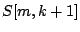 to have the same phase
relationship as for
depends only on the previous
value for the same
channel. The phase relationships between neighboring channels are left to
chance. This sometimes works fine, but sometimes the incoherence
of neighboring channels gives rise to an unintended chorus effect. We
would ideally wish for and 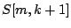 to have the same phase
relationship as for ![$T'[k]$](img1196.png) and 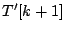, but also for the phase relationship
between and
and 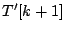, but also for the phase relationship
between and ![$S[m-1,k]$](img1198.png) to be the same as between and
to be the same as between and ![$T[k]$](img1199.png) .
.
These  equations for
equations for  phases in general will have no solution, but we
can alter the equation for above so that whenever there happens to be
a solution to the over-constrained system of equations, the reconstruction
algorithm homes in on the solution. This approach is called
phase locking
[Puc95b], and has the virtue of simplicity although more
sophisticated techniques are available [DL97]).
phases in general will have no solution, but we
can alter the equation for above so that whenever there happens to be
a solution to the over-constrained system of equations, the reconstruction
algorithm homes in on the solution. This approach is called
phase locking
[Puc95b], and has the virtue of simplicity although more
sophisticated techniques are available [DL97]).
The desired output phase relation, at the frame  , is:
, is:
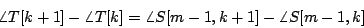
or, rearranging:
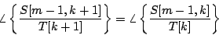
In other words, the phase of the quotient 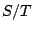 should not depend on  .
With this in mind, we can rewrite the recursion formula for :
.
With this in mind, we can rewrite the recursion formula for :
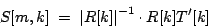
with
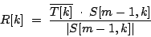
and because of the previous equation, the ![$R[k]$](img1206.png) should all be in phase. The
trick is now to replace
for each with the sum of three neighboring ones. The computation is then:
should all be in phase. The
trick is now to replace
for each with the sum of three neighboring ones. The computation is then:
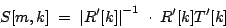
with
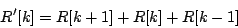
If the channels are already in the correct phase relationship, this has
no effect (the resulting phase will be the same as if only were
used.) But in general the sum will share two terms in common with its
neighbor at 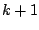:
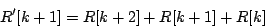
so that the 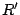 will tend to point more in the same direction than the  do. Applying this iteratively will eventually line all the up to the
same phase, as long as the phase relationships between the measured spectra
do. Applying this iteratively will eventually line all the up to the
same phase, as long as the phase relationships between the measured spectra
 and 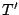 allow it.
and 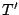 allow it.
Next: Phase bashing
Up: Phase
Previous: Phase
Contents
Index
Miller Puckette
2006-12-30